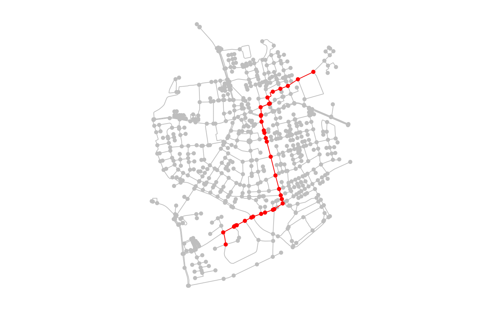
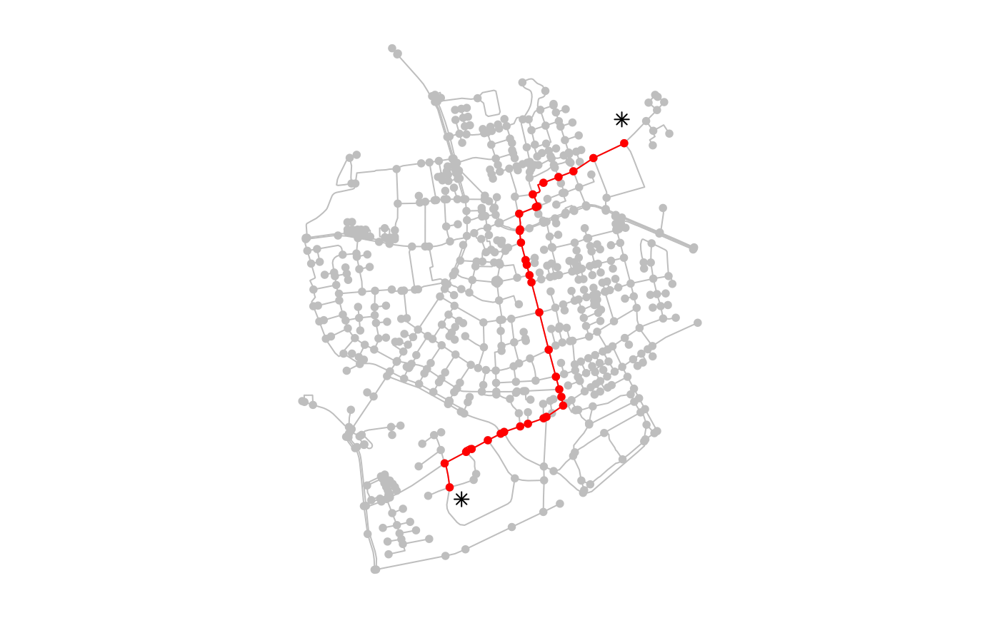
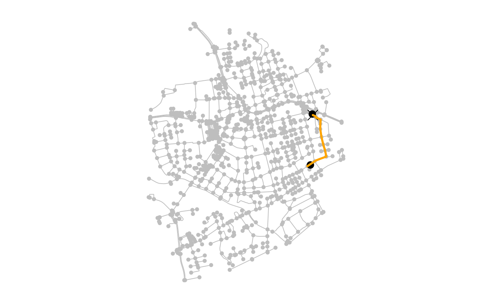

Find shortest paths between nodes in a spatial network
Usage
st_network_paths(
x,
from,
to = node_ids(x),
weights = edge_length(),
all = FALSE,
k = 1,
direction = "out",
router = getOption("sfn_default_router", "igraph"),
use_names = FALSE,
return_cost = TRUE,
return_geometry = TRUE,
...
)Arguments
- x
An object of class
sfnetwork.- from
The node where the paths should start. Evaluated by
evaluate_node_query.- to
The nodes where the paths should end. Evaluated by
evaluate_node_query. By default, all nodes in the network are included.- weights
The edge weights to be used in the shortest path calculation. Evaluated by
evaluate_weight_spec. The default isedge_length, which computes the geographic lengths of the edges.- all
Should all shortest paths be returned for each pair of nodes? If set to
FALSE, only one shortest path is returned for each pair of nodes, even if multiple shortest paths exist. Defaults toFALSE.- k
The number of paths to find. Setting this to any integer higher than 1 returns not only the shortest path, but also the next k - 1 loopless shortest paths, which may be longer than the shortest path. Currently, this is only supported for one-to-one routing, meaning that both the from and to argument should be of length 1. This argument is ignored if
allis set toTRUE.- direction
The direction of travel. Defaults to
'out', meaning that the direction given by the network is followed and paths are found from the node given as argumentfrom. May be set to'in', meaning that the opposite direction is followed an paths are found towards the node given as argumentfrom. May also be set to'all', meaning that the network is considered to be undirected. This argument is ignored for undirected networks.- router
The routing backend to use for the shortest path computation. Currently supported options are
'igraph'and'dodgr'. See Details.- use_names
If a column named
nameis present in the nodes table, should these names be used to encode the nodes in a path, instead of the node indices? Defaults toFALSE. Ignored when the nodes table does not have a column namedname.- return_cost
Should the total cost of each path be computed? Defaults to
TRUE.- return_geometry
Should a linestring geometry be constructed for each path? Defaults to
TRUE. The geometries are constructed by callingst_line_mergeon the linestring geometries of the edges in the path. Ignored for networks with spatially implicit edges.- ...
Additional arguments passed on to the underlying function of the chosen routing backend. See Details.
Value
An object of class sf with one row per requested
path. If return_geometry = FALSE or edges are spatially implicit, a
tbl_df is returned instead. If a requested path could
not be found, it is included in the output as an empty path.
Depending on the argument settings, the output may include the following columns:
from: The index of the node at the start of the path.to: The index of the node at the end of the path.node_path: A vector containing the indices of all nodes on the path, in order of visit.edge_path: A vector containing the indices of all edges on the path, in order of visit.path_found: A boolean describing if the requested path exists.cost: The total cost of the path, obtained by summing the weights of all visited edges. Included ifreturn_cost = TRUE.geometry: The geometry of the path, obtained by merging the geometries of all visited edges. Included ifreturn_geometry = TRUEand the network has spatially explicit edges.
Details
The sfnetworks package does not implement its own routing algorithms to find shortest paths. Instead, it relies on "routing backends", i.e. other R packages that have implemented such algorithms. Currently two different routing backends are supported.
The default is igraph. This package supports
one-to-many shortest path calculation with the
shortest_paths function. Note that multiple from nodes
are not supported. If multiple from nodes are given, only the first one is
taken. The igraph router also supports the computation of all shortest path
(see the all argument) through the
all_shortest_paths function and of k shortest paths
(see the k argument) through the
k_shortest_paths function. In the latter case, only
one-to-one routing is supported, meaning that also only one to node should
be provided. The igraph router does not support dual-weighted routing.
The second supported routing backend is dodgr. This
package supports many-to-many shortest path calculation with the
dodgr_paths function. It also supports dual-weighted
routing. The computation of all shortest paths and k shortest paths is
currently not supported by the dodgr router. The dodgr package is a
conditional dependency of sfnetworks. Using the dodgr router requires the
dodgr package to be installed.
The default router can be changed by setting the sfn_default_router
option.
Examples
library(sf, quietly = TRUE)
library(tidygraph, quietly = TRUE)
oldpar = par(no.readonly = TRUE)
par(mar = c(1,1,1,1))
net = as_sfnetwork(roxel, directed = FALSE) |>
st_transform(3035)
# Compute the shortest path between two nodes.
# Note that geographic edge length is used as edge weights by default.
paths = st_network_paths(net, from = 495, to = 121)
paths
#> Simple feature collection with 1 feature and 6 fields
#> Geometry type: LINESTRING
#> Dimension: XY
#> Bounding box: xmin: 4152025 ymin: 3207259 xmax: 4152176 ymax: 3207843
#> Projected CRS: ETRS89-extended / LAEA Europe
#> # A tibble: 1 × 7
#> from to node_path edge_path path_found cost geometry
#> <int> <int> <list> <list> <lgl> [m] <LINESTRING [m]>
#> 1 495 121 <dbl [15]> <dbl [14]> TRUE 670. (4152096 3207259, 4152130 3…
plot(net, col = "grey")
plot(st_geometry(net)[paths$from], pch = 20, cex = 2, add = TRUE)
plot(st_geometry(paths), col = "orange", lwd = 3, add = TRUE)

# Compute the shortest paths from one to multiple nodes.
# This will return a tibble with one row per path.
paths = st_network_paths(net, from = 495, to = c(121, 131, 141))
paths
#> Simple feature collection with 3 features and 6 fields
#> Geometry type: LINESTRING
#> Dimension: XY
#> Bounding box: xmin: 4151719 ymin: 3206620 xmax: 4152176 ymax: 3207957
#> Projected CRS: ETRS89-extended / LAEA Europe
#> # A tibble: 3 × 7
#> from to node_path edge_path path_found cost geometry
#> <int> <int> <list> <list> <lgl> [m] <LINESTRING [m]>
#> 1 495 121 <dbl [15]> <dbl [14]> TRUE 670. (4152096 3207259, 4152130 …
#> 2 495 131 <dbl [31]> <dbl [30]> TRUE 1496. (4151720 3206620, 4151719 …
#> 3 495 141 <dbl [11]> <dbl [10]> TRUE 214. (4152055 3207957, 4151998 …
plot(net, col = "grey")
plot(st_geometry(net)[paths$from], pch = 20, cex = 2, add = TRUE)
plot(st_geometry(paths), col = "orange", lwd = 3, add = TRUE)

# Compute the shortest path between two spatial point features.
# These are snapped to their nearest node before finding the path.
p1 = st_geometry(net, "nodes")[495] + st_sfc(st_point(c(50, -50)))
st_crs(p1) = st_crs(net)
p2 = st_geometry(net, "nodes")[121] + st_sfc(st_point(c(-10, 100)))
st_crs(p2) = st_crs(net)
paths = st_network_paths(net, from = p1, to = p2)
paths
#> Simple feature collection with 1 feature and 6 fields
#> Geometry type: LINESTRING
#> Dimension: XY
#> Bounding box: xmin: 4152060 ymin: 3207348 xmax: 4152221 ymax: 3207784
#> Projected CRS: ETRS89-extended / LAEA Europe
#> # A tibble: 1 × 7
#> from to node_path edge_path path_found cost geometry
#> <int> <int> <list> <list> <lgl> [m] <LINESTRING [m]>
#> 1 477 216 <dbl [12]> <dbl [11]> TRUE 586. (4152060 3207348, 4152122 3…
plot(net, col = "grey")
plot(c(p1, p2), pch = 20, cex = 2, add = TRUE)
plot(st_geometry(net)[paths$from], pch = 4, cex = 2, add = TRUE)
plot(st_geometry(paths), col = "orange", lwd = 3, add = TRUE)

# Use a node type query function to specify destinations.
st_network_paths(net, 1, node_is_adjacent(1))
#> Simple feature collection with 4 features and 6 fields (with 1 geometry empty)
#> Geometry type: LINESTRING
#> Dimension: XY
#> Bounding box: xmin: 4151754 ymin: 3207609 xmax: 4151785 ymax: 3207727
#> Projected CRS: ETRS89-extended / LAEA Europe
#> # A tibble: 4 × 7
#> from to node_path edge_path path_found cost geometry
#> <int> <int> <list> <list> <lgl> [m] <LINESTRING [m]>
#> 1 1 1 <dbl [1]> <dbl [0]> TRUE 0 EMPTY
#> 2 1 2 <dbl [2]> <dbl [1]> TRUE 17.2 (4151782 3207612, 4151765 3…
#> 3 1 393 <dbl [2]> <dbl [1]> TRUE 119. (4151757 3207727, 4151754 3…
#> 4 1 624 <dbl [2]> <dbl [1]> TRUE 2.88 (4151785 3207613, 4151782 3…
# Use a spatial edge measure to specify edge weights.
# By default edge_length() is used.
st_network_paths(net, p1, p2, weights = edge_displacement())
#> Simple feature collection with 1 feature and 6 fields
#> Geometry type: LINESTRING
#> Dimension: XY
#> Bounding box: xmin: 4152060 ymin: 3207348 xmax: 4152221 ymax: 3207784
#> Projected CRS: ETRS89-extended / LAEA Europe
#> # A tibble: 1 × 7
#> from to node_path edge_path path_found cost geometry
#> <int> <int> <list> <list> <lgl> [m] <LINESTRING [m]>
#> 1 477 216 <dbl [12]> <dbl [11]> TRUE 584. (4152060 3207348, 4152122 3…
# Use a column in the edges table to specify edge weights.
# This uses tidy evaluation.
net |>
activate("edges") |>
mutate(foo = runif(n(), min = 0, max = 1)) |>
st_network_paths(p1, p2, weights = foo)
#> Simple feature collection with 1 feature and 6 fields
#> Geometry type: LINESTRING
#> Dimension: XY
#> Bounding box: xmin: 4152060 ymin: 3207348 xmax: 4152244 ymax: 3207784
#> Projected CRS: ETRS89-extended / LAEA Europe
#> # A tibble: 1 × 7
#> from to node_path edge_path path_found cost geometry
#> <int> <int> <list> <list> <lgl> <dbl> <LINESTRING [m]>
#> 1 477 216 <dbl [11]> <dbl [10]> TRUE 4.57 (4152060 3207348, 4152122 …
# Compute the shortest paths without edge weights.
# This is the path with the fewest number of edges, ignoring space.
st_network_paths(net, p1, p2, weights = NA)
#> Simple feature collection with 1 feature and 6 fields
#> Geometry type: LINESTRING
#> Dimension: XY
#> Bounding box: xmin: 4152060 ymin: 3207348 xmax: 4152180 ymax: 3207784
#> Projected CRS: ETRS89-extended / LAEA Europe
#> # A tibble: 1 × 7
#> from to node_path edge_path path_found cost geometry
#> <int> <int> <list> <list> <lgl> <dbl> <LINESTRING [m]>
#> 1 477 216 <dbl [11]> <dbl [10]> TRUE 10 (4152060 3207348, 4152122 …
# Use the dodgr router for many-to-many routing.
paths = st_network_paths(net,
from = c(1, 2),
to = c(10, 11),
router = "dodgr"
)
# Use the dodgr router for dual-weighted routing.
paths = st_network_paths(net,
from = c(1, 2),
to = c(10, 11),
weights = dual_weights(edge_segment_count(), edge_length()),
router = "dodgr"
)
par(oldpar)